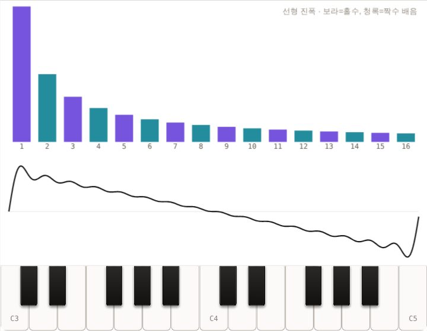
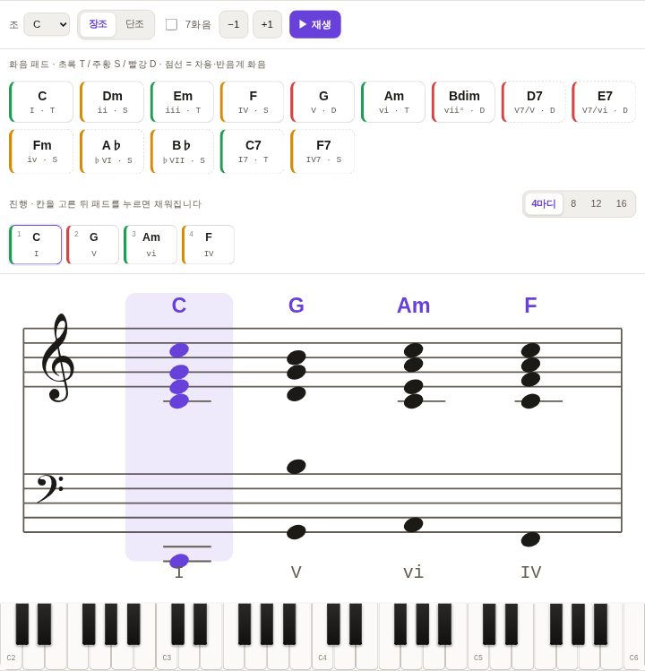

배음을 쌓고, 화음을 듣고, 리듬을 만들어 봅니다. MusicBook의 음악 기초와 기타·피아노·드럼·베이스 교과서가 함께 꽂힌 음악 서가입니다.
1권 공개음악 기초 · 기타 · 피아노 · 드럼 · 베이스
조건에 맞는 책이 없습니다. 다른 검색어나 분야를 선택해 보세요.
MusicBook · 음악 기초 · GuitarBook · 기타 · PianoBook · 피아노 · DrumBook · 드럼 · BassBook · 베이스. JavaScript를 켜면 책 검색을 사용할 수 있습니다.
질문 하나를 골라 시뮬레이터를 움직여 보세요. 각 실험은 해당 교과서의 그 장면으로 바로 이어집니다.


처음이라면 소리의 원리부터, 연주가 궁금하다면 화음과 리듬부터 시작하세요.
파동과 음색을 이해하고 음악의 언어로 넘어갑니다.
화음의 구조를 익히고 코드 진행과 선율을 엮습니다.
박자를 느끼고 패턴을 쌓아 나만의 루프를 만듭니다.